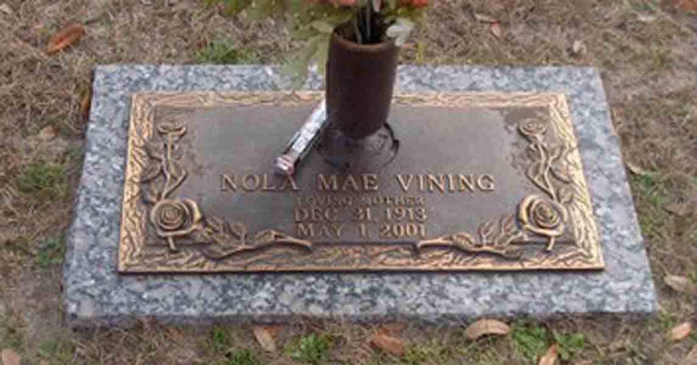

Census Data
| 1940 | 1945 | |
| Thomas B. Vining | ? | 32 |
| Nola Mae (Skeen) Vining | ? | 30 |
| Thomas Nathan Vining | ? | 9 |
| James Ronald Vining | 1 |

Death Data
Gravestone of Nola May (Skeen) Vining, in Forest Lawn Memorial Gardens, Lake City, Columbia County, Florida (from Find A Grave):